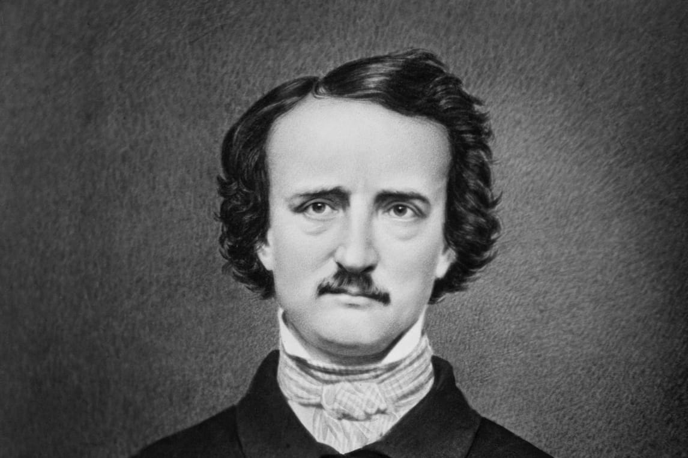

Mistrz Makabry
Edgar Allan Poe to postać tragiczna, której życie przypominało
momentami fabułę jego własnych mrocznych opowieści. Oto
najważniejsze fakty z jego biografii, podane bez zbędnych
upiększeń:
Urodził się w 1809 roku w Bostonie. Jego rodzice byli aktorami;
ojciec porzucił rodzinę, a matka zmarła na gruźlicę, gdy Edgar miał
zaledwie dwa lata. Został przygarnięty (choć nigdy formalnie nie
adoptowany) przez zamożnego kupca z Richmond, Johna Allana. Stąd
wzięło się jego drugie nazwisko.
Relacje z przybranym ojcem były fatalne, głównie na tle finansowym.
Poe studiował krótko na Uniwersytecie Wirginia, ale popadł w długi
hazardowe, co doprowadziło do zerwania z Allanem. Próbował sił w
armii, a nawet w akademii West Point, skąd jednak został wydalony za
celowe zaniedbywanie obowiązków.
Poe był jednym z pierwszych amerykańskich pisarzy, którzy próbowali
utrzymać się wyłącznie z pisania. Skutkowało to niemal ciągłą biedą
i głodem. Pracował jako redaktor w różnych pismach, zyskując opinię
genialnego, ale bezlitosnego krytyka (nazywano go „człowiekiem z
tomahawkiem”).
1841: Publikuje Zabójstwo przy Rue Morgue, uznawane za pierwszy
nowożytny kryfminał.
1845: Publikuje wiersz Kruk, który przyniósł mu ogromną sławę, ale
niemal żadnych pieniędzy (dostał za niego prawdopodobnie około 9-15
dolarów).
W wieku 27 lat poślubił swoją 13-letnią kuzynkę, Virginię Clemm. Ich
małżeństwo było pełne oddania, ale naznaczone chorobą. Virginia
zmarła na gruźlicę w 1847 roku, co pogrążyło Poego w głębokiej
depresji i pogłębiło jego problemy z alkoholem.
Zmarł w 1849 roku w Baltimore w niewyjaśnionych okolicznościach.
Znaleziono go na ulicy w stanie delirium, ubranego w cudze ubrania.
Nie był w stanie wyjaśnić, co się z nim działo. Zmarł w szpitalu
cztery dni później, a dokumentacja medyczna zaginęła. Do dziś krążą
teorie o pobiciu, otruciu, a nawet wściekliźnie.
Kruk
„Pchnąłem okno. I z łopotem skrzydeł, czarnych piór furkotem Wdarł się przez nie szumnym lotem kruk, ptak święty w dawnych dniach. Musiał znać swą przeszłość - zatem, jakby gardził ludzkim światem, Z wielkopańskim majestatem zasiadł w ciszy tuz przy drzwiach, Na Atenie marmurowej tkwiącej w niszy, tuz przy drzwiach. Siadł, a mnie ogarnął strach.”
Bohater kontempluje na temat swojego życia i podstawia w
wątpliwość jego sens. Po śmierci ukochanej jedyne co mu pozostało
to smutek, pustka i chłód. Gdy tak siedział, nastąpiła burza. W
czasie owej burzy, przez okno wdarł się ptak – czarny jak smoła
kruk, który usiadł na marmurowym popiersiu. Bohater zaczął zadawać
mu pytania, na co nieugięty ptak odpowiadał zawsze w ten sam
sposób - „nigdy już (nevermore)”. Doprowadziło to ostatecznie
bohatera do szaleństwa.
Opowiadanie bezpośrednio pokazuje do jakiego stanu, potrafi
doprowadzić człowieka strata ukochanej. Bohater popadł w taki stan
melancholii, z którego może się już nigdy nie wykaraskać. W swoim
niezrównoważeniu bohater zaczął rozmawiać z krukiem – zwierzęciem,
które przecież nie ma prawa rozumieć go. Mężczyzna zaczyna go
obwiniać o cale zło, denerwuje się, gdyż kruk nie chce udzielić mu
satysfakcjonującej odpowiedzi na jego pytania.
Berenice
Niedola różne ma oblicza. Nędza tego ziemskiego padołu przybiera rozliczne postaci, roztaczając się nad rozległym widnokręgiem na podobieństwo tęczy.
Główny bohater żyje w odosobnieniu od świata zewnętrznego. W jego
pobliżu zawsze znajduje się kuzynka, tytułowa Berenice.
Bohaterowie z czasem popadają w nieokreślone uczucie, które
przeistacza się w pełnoprawną miłość, podszyta melancholia.
Berenice, która jest słabego zdrowia, z czasem umiera, co
przekłada się na zdrowie psychiczne bohatera. Bohater, w
przypływie szaleństwa, rozkopuje grób, skąd wyrywa swojej
ukochanej wszystkie żeby, zamykając je w szkatułce.
Opowiadanie, mimo ze krótkie, ukazuje kilka ciekawych motywów. Na
pierwszy plan wysuwa się melancholia i wszechogarniający smutek,
który często dominuje w utworach Poego. Mamy wątek
niezrównoważenia psychicznego, którego to główny bohater określa
mianem „Monomanii”. Zaburzenie owo, doprowadza bohatera do czynu
wręcz plugawego, gdyż bohater nie mógł przestać myśleć o zębach
swojej ukochanej. Doprowadziło go to do zbeszczeszczania grobu,
jak i samej zmarłej.